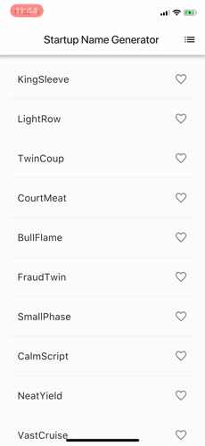
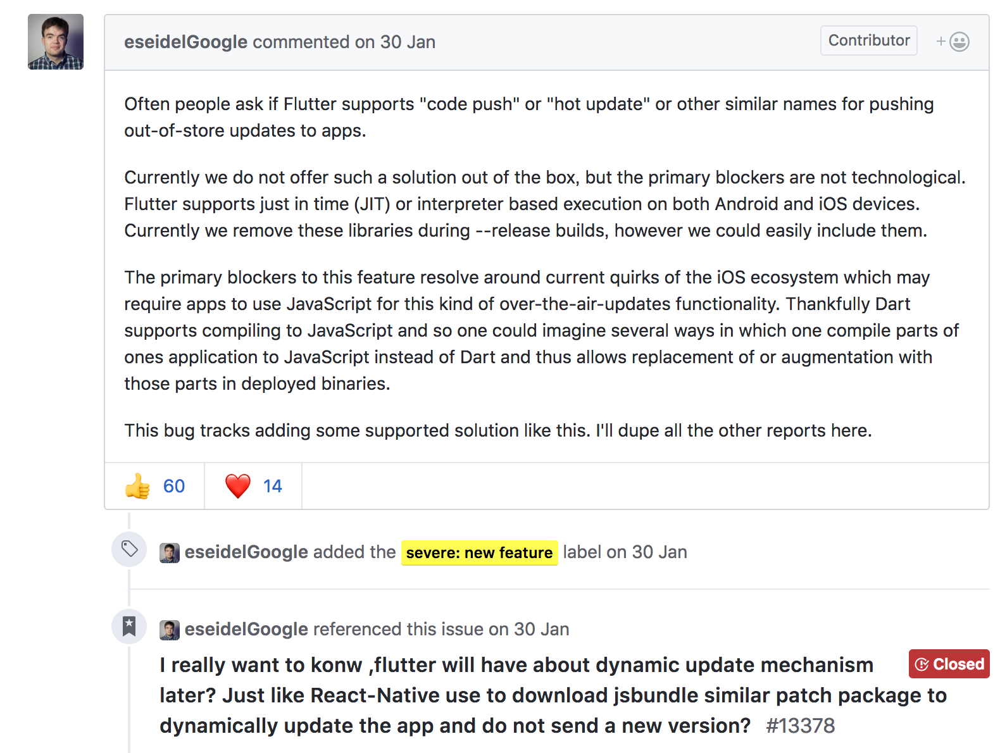
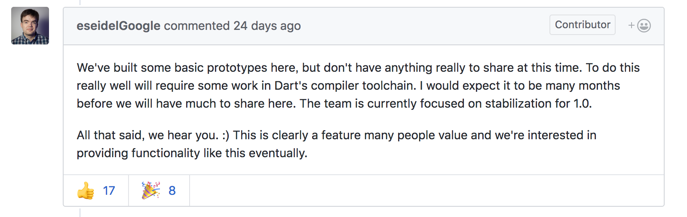

前言
大前端的舞台上你方唱罢我登场。前期做服务端的可能要稍微懂点jsp，html，js，jquery，css，html，甚至还有flash等等，页面的基本布局跟数据填充还是要自己写的。这些都是b/s架构的前端显示。都是基于html的页面技术。移动应用出来后，都是围绕着相应的平台做native view的开发。后来移动应用也有了混合开发，在view显示加入了html5。html5被应用在app上的时候，也被人吹了好几年，后来发现app的webview展示性能始终不尽人意。再后来就是像React Native这样的跨平台应用框架出台，然后就是google自家的flutter。各种技术都有自己的布道者大力鼓吹，感觉出了个什么就要取代什么，大家都要用的样子。其实也不过就是一种需求的解决方案罢了。
React Native和Flutter
为什么这两个框架总放在一起说：
- 都号称有堪比原生的执行效率。（这个我是不信的）
- 跨平台，使用和原生开发不同的语言。js和Dart都具有现代语言的优势，弱类型和语法简单。
- 开发效率高，都有热重载。（RN还有生产环境的热加载，Flutter暂时没有，这个后面说）
- 不使用webview加载
不得不说，这些框架的出现挤占了原生开发者的空间，特别是RN使用的js把页面前端的开发者也引入到了客户端前端开发当中。（不过后来部分公司开始吐槽，原来只需要一个原生开发者，现在需要一个前端开发和一个原生开发。）
你要什么？
选择一种技术肯定有趋向性，首先明确自己想要是什么。
- 热修复
- 更快的迭代开发速度
- 跨平台
- 职责明确，专人负责UI
- 活跃的开源社区
无疑，这两种都能满足你
| 框架 | 使用语言 | 开发环境 | 编译 | 线上热加载 | 开发时热重载 |
|---|---|---|---|---|---|
| React Native | JavaScript | vs，webstorm … | JIT | 支持 | 支持 |
| Flutter | Dart | as,vs … | JIT,AOT | 不支持 | 支持 |
很明显，Flutter对android原生开发人员是非常友好的，学习曲线也平滑，简直就是量身打造（毕竟是google出品）
一个新的app其实不用这么纠结。评估一下项目，很容易选择适合自己的框架。
对一个现有的项目，加入新的框架就有很多考量了。
- 是否增加包体积
- 是否增加app运存
- 是否增加cpu使用率
- 是否稳定（是否增加闪退率）
- 框架是否频繁更新
- 框架是否有良好的文档
- 现有开发人员的学习曲线是否陡峭（土豪公司不用考虑）
对上面的几条，需要大量的数据才能得出结果，目前能确定的是。
- 是(flutter一个什么功能都没有的新包，是29MB)
- 是
- 不一定
- 是
- 是
- flutter是
- rn对页面前端开发友好，flutter对android开发人员更友好（不过dart的语法和js更像）
Flutter
官网
学习一门新的技术，最快的方式就是先从官网入手。（中文的第三方社区总会有那么一点偏差）
说实话，看完flutter官网，第一直觉就是，reactnative就是个渣渣（原谅我这么直接）。能看的出google官方推Flutter的力度。
绝对是良心官网，做到了一站式学习，感觉看完官网就可以飞了，什么第三方教程都可以走开。（澄清一下哈，本文不是教程，只是简介，把从官网看到的根据自己的思路总结一下）
Dart
说到新框架，新语言，简直心累，各种语言从入门到放弃。没办法，想用这个技术框架，就得跟着框架走。
既然不得不学习Dart，我们就要清楚
为什么要用Dart。为什么是它？
这边给上一篇译文，写的非常全面。为什么Flutter会选择 Dart ？
英文好的朋友可以去看原文(真让人羡慕) Why Flutter Uses Dart
上面的文章说的很有蛊惑性。我看到最有价值还是JIT和AOT，既有即时编译，也有预编译，还有自己的虚拟机，速度一定高于基于js的reactnative，这个没话说，点个赞。
google还很贴心的给出了一个java开发者学习dart语言的一个快速小教程，你可以先去体验一下dart，非常快。从java到dart
开发Flutter
Hello World
先是安装，这个跟着官网的Get started一步一步做就可以了。Get started会引导你搭建环境，开发第一个flutter，然后编写了第一个flutter程序后，你就会对flutter有个比较直观的印象。大概是下面的样子。（盗官方的图!）

UI
它是和rn非常相似的响应式UI框架，说白了就是修改一个类似RN里面的状态机的东西，然后自动刷新UI。StatelessWidget就是Flutter里面无状态的组件，StatefulWidget是有状态的组件。
Flutter里面所有的一切都是组件。而且随你怎么玩弄。Flutter组件结构，采用组合大于继承的方式，类结构浅而宽，再使用Flutter的时候，首先想到的应该使用多个小部件组成一个新的部件，而不是继承一个现有的部件。它会给你更高的权限来修改。如果像android原生的View，采用继承结构，父类里面已经定义好的属性或者样式，你在子类里面就无权修改了。
搬用工 组件 ，里面有所有组件的介绍。
我觉得在基本语法，和用法都掌握的情况下，就剩下用到哪个组件，然后去官网查了。
Android
如果是android开发者，首页可能要看下这篇文章（也是官网的）Flutter for Android Developers
里面会全面的告诉你，Android原生的View，intent，layout，异步UI，资源加载等等，在Flutter里面都对应的是什么东西，怎么调用，一目了然。
你关心的热加载
大部分公司看上ReactNative我估计是都是看上了它的热加载技术（最起码我的公司是）。很遗憾，Flutter官网也明确说了，不支持！那么我就有疑问了，明明支持JIT，并且开发时可以热重载，为什么就不能热加载呢。（注意，开发时的加载官方叫做Using Hot Reload，热重载，和我们想象中的rn那样的热加载不是一回事）。悄悄的google了一下，果然有人问到这个问题，Flutter的项目经理也出来现身说法了，它肯定也不愿意开发者因为flutter没有热加载，而投身rn阵营。
下面是这位大佬的回答

大致意思就是我们能搞，而且本来也是支持的（毕竟是JIT编译），这里IOS背了锅，因为IOS，我们删除了支持该功能的库，加上也非常容易。如果你实在想搞热加载，把一些希望热加载东西自己去写js吧
大哥，你这个回答我可是很不服气，你让我用flutter，还得再去把部分代码抽成js。
github上群众的呼声依然很高，Eric Seidel 老大终于服软

使用万能的google翻译后
我们在这里构建了一些基本的原型，但目前还没有真正分享的东西。要做到这一点，需要在Dart的编译器工具链中进行一些工作。我希望它能在很长一段时间才能在这里分享。该团队目前专注于稳定1.0。总而言之，我们听到了你。:)这显然是许多人重视的功能，我们最终有兴趣提供这样的功能。
呵呵，All that said, we hear you.大佬也认怂了，总结一句话，先稳定1.0，后期我会搞！
总结
从各方面感觉，Flutter非常的有搞头。而且就在前几天，谷歌被欧盟罚了50亿，新闻上一片呼声说谷歌要用Fuchsia替换android。后来谷歌澄清说，没有这种事，Fuchsia只是我们内部的一个实验。但是！！你会发现：Fuchsia的用户界面和应用是用Flutter写的。重要的事情说三遍：Fuchsia的用户界面和应用是用Flutter写的。Fuchsia的用户界面和应用是用Flutter写的。Fuchsia的用户界面和应用是用Flutter写的。